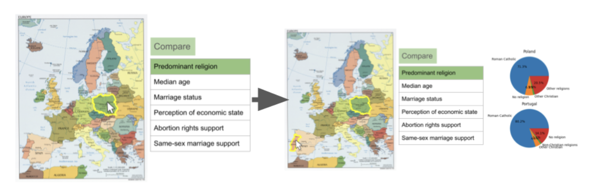
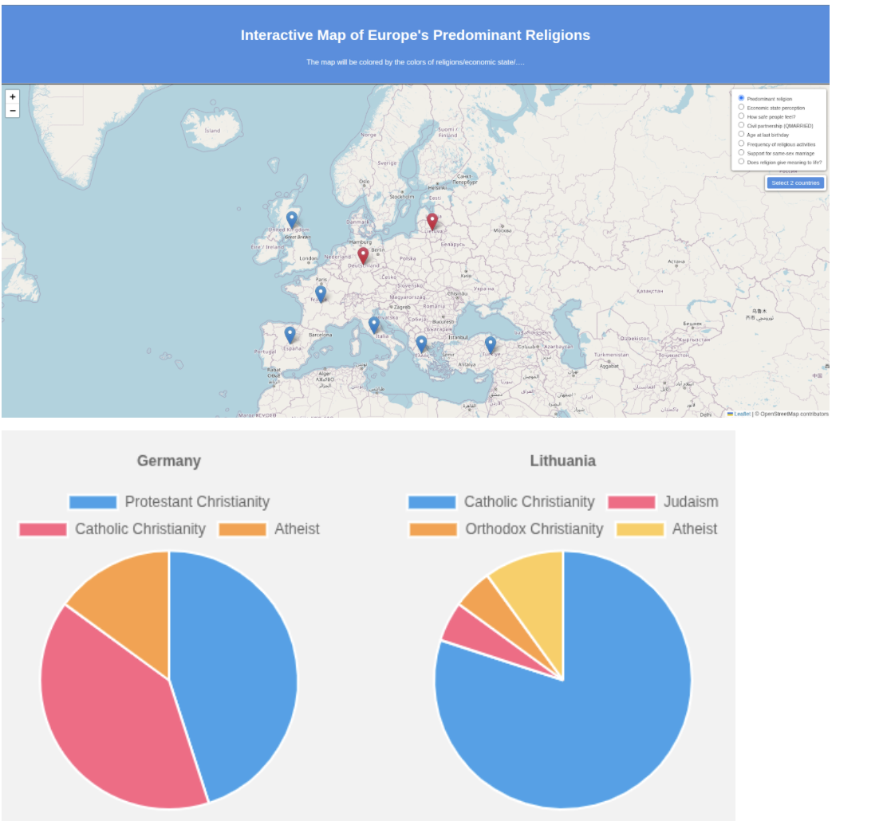

Understanding European Diversity Through Religious Data
The origins of religion can be traced back to at least 100,000 years ago, and it has continuously and profoundly influenced the development and continuation of human civilization. According to incomplete statistics, there are currently approximately 4,000 different religions and belief systems worldwide, closely linked to human social life, cultural traditions, and economic activities. Therefore, this project aims to use data visualization to display the distribution, evolution, and societal impact of religious patterns. We focus on linking these religious patterns with the various social questions, and we specifically showcase this with European data.
Pew Research Center & European Social Survey Data
All datasets used in this project are sourced from the Pew Research Center. Pew Research Center is a nonpartisan fact tank that informs the public about the issues, attitudes and trends shaping the world. This project primarily selects data from the International religion survey data. We used two European datasets - Western Europe survey and Central and Eastern Europe survey.
Period: April to August 2017
Sample: 26,000+ telephone interviews
Coverage: 16 countries, 14 languages
Focus: Role of religion in public and private life, views toward religious minorities
Period: June 2015 to July 2016
Sample: 31,000+ face-to-face interviews
Coverage: 19 countries, 17 languages
Focus: Religion in public life and national identity post-Soviet Union
These datasets are very broad and informative, but they were not unified, which restricted us in what we could show in our visualizations. If one dataset had the evaluation of respondent's happiness level, the other did not, and that meant that this kind of data could not be included.
We also found datasets created by the European Social Survey (ESS) to showcase the temporal aspect of religions. We had 11 different datasets from 2002 to 2024 conducted every two years. We chose to use these datasets because the social climate changes and religious populations, especially with this information age evolve very quickly.
Understanding Dataset Boundaries and Potential
In Milestone 1, we tried to find the boundaries of the datasets and find what exactly this kind of survey data can show to us. A lot of survey questions were specific to each country, such as how Lithuanians perceive the religious minorities population at the time of the question compared to the time in the Soviet Union. We discovered that these questions were not valuable as they did not give an insight into how the countries compare.
| Region | Christian | Muslim | Atheist | Other |
|---|---|---|---|---|
| Eastern Europe | 78% | 9.1% | 3.5% | 9.4% |
| Western Europe | 68.1% | 1% | 10.7% | 20.2% |
Website Layout & Visual Identity
From the start of the project we had an idea to compare countries, thus our main focus was always the map. To display the comparisons, we chose to color the countries according to their most common answers such that the user could immediately see results on a surface level. The goal was to make the experience of finding and interacting with data as smooth and easy as possible, thus we opted for a scrollable layout.
For our color scheme we chose purple gradient with blue. As religion and various opinions are very abstract topics we wanted something neutral but engaging. Therefore we opted for a smooth gradient coloring that we kept consistent with the visualizations.
User Journey Through European Diversity
We wanted to tell the story of how religions impact the way people perceive their countries and what beliefs they hold. However, during the project and our storytelling, we found that religions do not divide people as much as we thought they were. Therefore, we wanted the user to experience the same realization as we had through various topics such as economic state perception and abortion rights in the countries.
Interactive Data Exploration Tools
We initially started with the goal to implement one interactive map that would change the coloring depending on the selected topic. In addition to that, we wanted users to interact with the map and discover deeper information by comparing selected countries.
Our initial sketches were barebones with the ideas for functionality and to be convincing. Our design was not fluid or intuitive to use, but we wanted our ideas to be represented in the sketches.

Once we made our prototype for Milestone 2 without using D3, we developed ideas how to guide the user's eye without the additional test explanations and tutorials. We needed to make our website intuitive.

Coloring the countries with the same color if they have the same highest ranked data item (for example, Christianity when comparing religion), would already show the data in a simple manner that is understandable with a legend. Moreover, to link our story and the map selector, we kept the same radio buttons with emojis (🛐, 💰, 💑, 🏥, 🏳️🌈) for instant recognition of what the user had seen on going through the website before. Then, to give quick insight on each country's details, we have a dynamic tooltip, which appears next to the cursor when it is hovered over a country in the map. The tooltip displays the percentages of the country's responses.
To compare the countries, we implemented the generated pie charts once the two countries are selected for it. This allows the user see in detail the visual comparison of what they could read in text in the floating tooltip, but this time side by side.
Religious Denominations Over Time
Since our map is based on only a one year survey, we wanted the user to see how the religious belonging and denominations evolved in detail over the past 20 years. Therefore, we created a bar chart that compares all countries from that year's ESS data, and shows the detailed distribution of religious denominations. This is an interactive bar chart, which the user can hover and see the data without having to look at the axes carefully. For easier reading, the data is sorted from the highest values to lowest, which means that for religious belonging the first country shown is always going to be with the highest religious population percentile, and for the religious denomination will be the country with a single stand-out denomination.
In addition to the bar chart, we added another map, which does not include the opinions of surveyees, but only their religious associations over the years. After gaining insight how the religious beliefs could have impacted surveyed opinions in the Pew Research data the user can gain insight how the same countries trended over the years.
Technical and Design Obstacles
Team Member Contributions